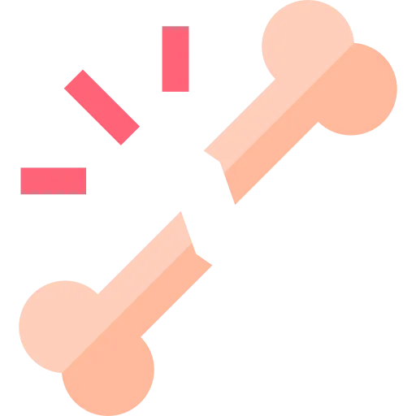
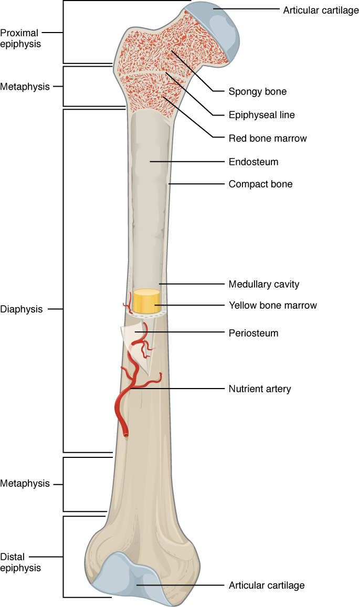
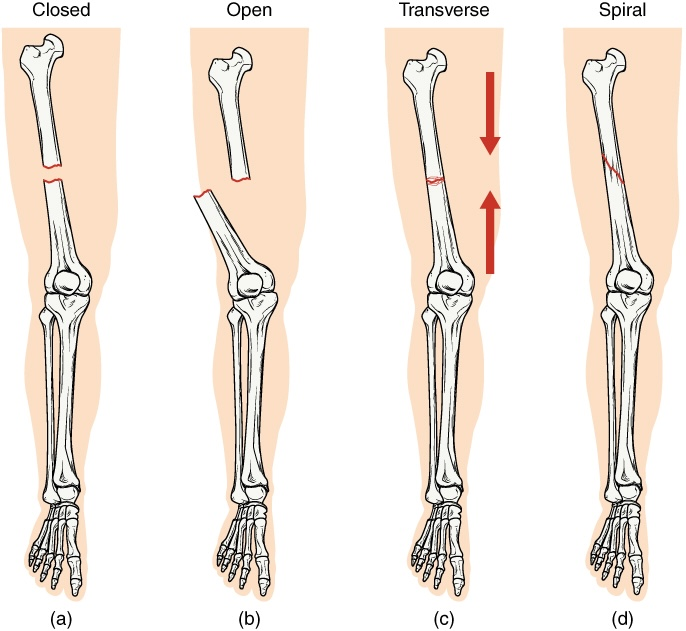
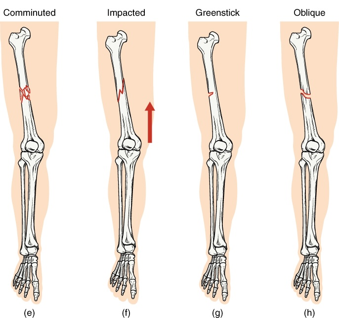

One assessment repeated every hour, one sign that arrives first and one that arrives too late, and the emergency where elevating the limb is the wrong answer.
A fracture is not a hard diagnosis. The x-ray makes it. What the exam tests is the six hours afterwards, when a limb is quietly dying and the vital signs look fine.
Points get lost here in three predictable ways.
Pulselessness is the fifth P and it is a late sign. By the time it goes, muscle has already died.
Compartment pressure rises above capillary pressure long before it reaches arterial pressure. So the artery keeps pushing blood past a compartment that can no longer perfuse. A present pulse is not reassurance.
Elevation and ice are correct for an ordinary swollen fracture. In compartment syndrome they are harmful.
Elevating drops the arterial pressure arriving at a limb that is already short. Ice constricts what flow is left. Both make the ischemia worse, and both feel like good nursing.
A patient whose pain climbs through adequate analgesia is telling you something. The answer is not more morphine.
Pain out of proportion to the injury, and pain on passive stretch, are the earliest signs of compartment syndrome. Medicating them away removes the only warning you had.
For every complication below, you should be able to say four things with the book closed: the one-sentence definition, the clue you would actually see in a patient, the priority nursing action, and the treatment with its teaching point.
If you cannot say all four out loud, you do not know it yet. Familiarity is not recall.
| Problem | Definition in one sentence | Clue in the scenario | Priority action | Treatment |
|---|---|---|---|---|
| Compartment syndrome | Pressure in a closed fascial compartment exceeds what perfusion needs. | Pain out of proportion, worse on passive stretch. A tense compartment. | Loosen or bivalve the cast. Limb at heart level. Call the surgeon. | Fasciotomy, within 6 hours. Do not elevate, ice, or mask the pain. |
| Fat embolism | Marrow fat enters the circulation after a long bone or pelvic fracture. | 24 to 72 hours later: breathless, confused, petechiae on the chest. | Oxygen, and tell the provider now. | Supportive care. Prevention is early immobilisation and gentle handling. |
| Open fracture | Bone has broken through the skin, so the fracture is contaminated. | Bone visible, or a wound over a fracture. | Cover with sterile saline-moistened gauze. Do not push bone back in. | IV antibiotics within 1 hour, surgical debridement, tetanus prophylaxis. |
| Growth plate injury | A fracture through the physis, the weakest part of a child's bone. | A child with a fracture near a joint. | Neurovascular checks, and screen for non-accidental trauma. | Reduction and immobilisation. Salter-Harris type predicts the growth risk. |
Write these four rows on one index card, by hand. Pain that will not settle is the compartment. Confusion at 48 hours is fat. Broken skin is antibiotics in an hour. A child near a joint is the growth plate. That card is most of the exam.
Bone is living tissue with a blood supply and a nerve supply. Both facts show up clinically.

| Layer | What it is | Why it matters clinically |
|---|---|---|
| Periosteum | A dense fibrous membrane over the bone surface, carrying vessels and nerves | This is why fractures hurt, and it is essential to healing. Tendons attach here. |
| Cortical bone | The dense outer layer, 80 percent of skeletal mass, arranged in Haversian systems | Strength and rigidity. It forms the shaft, where most fractures happen. |
| Cancellous bone | An inner honeycomb of trabeculae at the bone ends | Absorbs shock, and holds the red marrow. |
| Bone marrow | Red marrow makes blood cells; yellow marrow stores fat | That fat is what embolises after a long bone fracture. |
| Region | Where | What a fracture there costs |
|---|---|---|
| Epiphysis | The ends, mostly spongy bone under articular cartilage | The joint. These fractures affect function directly. |
| Metaphysis | Between the end and the shaft. Contains the growth plate in children | Growth. In a child this is the region that can shorten a limb. |
| Diaphysis | The shaft, thick cortical bone around a medullary cavity | The commonest fracture site, and the source of fat emboli. |
Bone gets blood three ways. The nutrient artery is the main supply, entering through the nutrient foramen. Periosteal vessels feed the outer third of the cortex. Metaphyseal and epiphyseal vessels feed the ends.
Disrupt that supply and the bone heals slowly or not at all. That is delayed union, nonunion, or avascular necrosis.
It also explains why the femoral neck and the scaphoid are the classic sites for avascular necrosis. Their blood arrives from one direction, and the fracture cuts it off.
Discrimination axis: is the skin intact.
Everything else about a fracture is descriptive. This one question changes the urgency.
Bone has broken through the skin, so the fracture is now contaminated.
This is a surgical emergency. Cover it with sterile saline-moistened gauze and never push protruding bone back in.
The skin is intact, so the fracture is not contaminated.
Not harmless. Soft tissue injury underneath can still be severe, and closed fractures are where compartment syndrome happens.


| Pattern | What it looks like | What caused it |
|---|---|---|
| Transverse | A straight break across the bone | Direct force |
| Oblique | A diagonal break at an angle | Twisting or angular force |
| Spiral | A break that wraps around the bone | Rotational force. Skiing, falls. In a non-walking child, suspect abuse. |
| Comminuted | Three or more fragments | High-energy trauma. The longest healing time, because the blood supply is disrupted. |
| Impacted | Fragments driven into each other | A fall on an outstretched hand |
| Greenstick | An incomplete break, cracked on one side | Children only. Their bone bends before it breaks. |
| Pathological | A break through abnormal bone | Cancer, osteoporosis. Trivial force, or none. |
| Classification | What it means | How it is treated |
|---|---|---|
| Nondisplaced | The fragments are still in anatomical alignment | Often just a cast or splint |
| Displaced | The fragments have moved out of position | May need reduction and fixation |
| Angulated | The fragments are tilted relative to each other | Reduction, to restore alignment |
| Rotated | The distal fragment is twisted on its long axis | Usually surgical correction |
Four stages, and knowing them tells you what the patient can safely do at each point.
Dairy, leafy greens, lean meat and some sunlight. Protein is the one most often missed in an older patient.
Discrimination axis: which P appears first, and which appears too late to help.
This is the assessment you repeat, hourly, on every patient with a fracture or a cast. Always distal to the injury, and always compared with the other limb.
| P | What you do | What worries you |
|---|---|---|
| Pain | Rate it. Then passively stretch the fingers or toes. | Pain out of proportion, or pain that spikes on passive stretch. The earliest sign. |
| Pallor | Compare skin colour with the other limb. Check nail beds. | Pale, white, mottled or cyanotic. |
| Pulselessness | Palpate distal pulses. Check capillary refill. | Weak or absent pulse, refill over 3 seconds. A late sign. |
| Paresthesia | Ask about numbness, tingling, pins and needles. | Any new numbness or altered sensation. |
| Paralysis | Ask them to move the fingers or toes. | Weakness or inability to move. The latest sign of all. |
The 5 P's are not five equal findings. They are a sequence, and they appear in roughly the order pressure rises.
Pain first, because nerves complain before they fail. Then paresthesia as the nerve starts to fail. Then pallor as perfusion drops. Then paralysis as the nerve stops working. Pulselessness last, because it takes the most pressure to close an artery.
Acting on the first P saves the limb. Acting on the fifth records the loss of it.
| What | How | Normal | Report |
|---|---|---|---|
| Pain | Ask them to rate it, then passively stretch the digits | Manageable with medication, no spike on stretch | Severe pain, especially on passive stretch |
| Pulses | Radial and ulnar in the arm. Dorsalis pedis and posterior tibial in the leg | Strong and easily palpable on both sides | Weak, thready, or absent |
| Colour | Compare with the other limb, and check the nail beds | Pink, warm, matching the uninjured side | Pale, white, mottled or cyanotic |
| Temperature | Back of your hand on both limbs | Warm and equal | Cool or cold |
| Capillary refill | Press the nail bed 2 to 3 seconds, release, count | Under 3 seconds | Over 3 seconds |
| Sensation | Light touch, and ask about numbness | Intact, no paresthesia | Numbness, tingling, reduced sensation |
| Movement | Wiggle the fingers or toes. Test grip or push | Full active range, good strength | Weakness or inability to move |
Pressure inside a closed muscle compartment rises until it exceeds what capillaries need to perfuse. Blood stops reaching the muscle and the nerve, and both start to die.
Without intervention, the damage is permanent within 6 to 8 hours. That clock is the entire reason this section exists.
From inside: bleeding and edema from the fracture itself.
From outside: a tight cast or a circumferential dressing.
Commonest with: tibial fractures and forearm fractures.
Also after: crush injuries, burns, and reperfusion.
Pressure passes capillary perfusion pressure. Muscle and nerve become ischemic.
Dying cells leak fluid, which raises the pressure further. That is the vicious cycle, and it does not stop on its own.
Without fasciotomy: Volkmann's contracture, or amputation.
Early, and this is when you act:
Late, and damage is already happening:
Do not elevate. Do not ice. Do not medicate the pain away. Elevation reduces arterial pressure reaching a limb that is already short. Ice constricts what flow remains. Analgesia removes your only early warning.
| Type | Drying time | What you need to know |
|---|---|---|
| Plaster | 24 to 72 hours | Handle with your palms only, because fingertips leave dents and dents cause pressure injuries. Leave it uncovered to dry. Heavier, but it moulds better. |
| Fiberglass | About 30 minutes | Water-resistant but not waterproof. Lighter. The edges can scratch. Dry it thoroughly if it gets wet. |
| Order | What it means |
|---|---|
| NWB, non-weight bearing | No weight at all on that leg. Crutches or a walker. |
| TTWB, toe touch | The toes touch for balance only. Still no actual weight. |
| PWB, partial weight bearing | A specified share of body weight, often 25 to 50 percent. |
| WBAT, weight bearing as tolerated | As much as is comfortable. Normal gait is the goal. |
Discrimination axis: timing. When a complication appears tells you which one it is.
| Complication | What you see | What happens |
|---|---|---|
| Compartment syndrome | Pain out of proportion and on passive stretch, a tense compartment, paresthesia progressing to paralysis | Emergency fasciotomy within 6 hours |
| Fat embolism | Dyspnea, tachypnea, hypoxia. Confusion and restlessness. Petechiae on chest, axillae and conjunctivae | Supportive care, oxygen, immobilisation |
It happens 24 to 72 hours after a long bone or pelvic fracture. Marrow fat enters the torn venous channels and travels.
The triad follows the route the fat takes. Lungs first, so respiratory distress. Then the brain, so confusion and restlessness. Then the skin, so petechiae on the chest, in the axillae and on the conjunctivae.
The petechiae are late but highly specific. A femur or pelvis fracture patient who becomes suddenly confused and breathless at 48 hours needs assessing now.
| Complication | What you see | What happens |
|---|---|---|
| Osteomyelitis | Fever, chills, malaise. Wound redness, drainage, odour. Raised white count, ESR and CRP | IV antibiotics and surgical debridement |
| Deep vein thrombosis | Unilateral leg swelling and warmth, calf pain. It can become a PE | Anticoagulation, compression devices, early mobility |
| Complication | What you see | What happens |
|---|---|---|
| Delayed union or nonunion | The fracture is not healing on schedule. Continued pain and instability. Smoking, infection and malnutrition are the risk factors | Bone stimulator, or surgery |
| Avascular necrosis | Bone dying from a cut-off blood supply. Classically the femoral neck and the scaphoid. Persistent pain despite apparent healing | Surgery, and joint replacement if severe |
Fat embolism: immobilise early, handle gently during transport, keep them hydrated, fix it surgically early where indicated, and watch long bone and pelvic fractures closely.
DVT and PE: mobilise early when it is safe, sequential compression devices, anticoagulant prophylaxis as ordered, hydration, ankle pumps.
Infection: sterile technique, monitor surgical sites, prophylactic antibiotics as ordered, clean pin sites, and teach the patient what infection looks like.
A child's bone is more porous and more flexible, so it bends before it breaks. It also has a growth plate, which an adult's does not, and that changes what a fracture can cost.
The physis is the weakest part of the paediatric skeleton, weaker than the surrounding ligament. So a force that would sprain an adult's ankle fractures a child's growth plate.
Injuries there can arrest growth, and that means a limb length discrepancy or an angular deformity years later.
Suspect growth plate involvement in any paediatric fracture near a joint.
| Type | Where the fracture runs | What it means for growth |
|---|---|---|
| I | Through the physis only, separating the growth plate | Excellent. Rarely affects growth |
| II | Through the physis and up into the metaphysis. The commonest, about 75 percent | Excellent. Rarely affects growth |
| III | Through the physis and down into the epiphysis, entering the joint | Good with proper reduction, but there is a growth risk |
| IV | Through metaphysis, physis and epiphysis together | Higher risk of growth arrest. Often needs surgery |
| V | A crush injury to the physis | Poor. High risk of growth arrest, and often diagnosed only in hindsight |
Straight across, type I, the physis alone. Above, type II, into the metaphysis. Lower, type III, into the epiphysis. Through all, type IV. Rammed or crushed, type V.
The numbers run in order of how badly growth is threatened, which is why the classification exists at all.
| Fracture | What it is | What you watch for |
|---|---|---|
| Greenstick | Incomplete. The bone bends and cracks on one side only | Common because paediatric bone is flexible. Sometimes it has to be completed to align properly |
| Buckle, or torus | A compression fracture that makes the cortex bulge | Stable. Usually a splint or cast, and it heals very well |
| Plastic deformation | The bone bends with no visible fracture line | May not show on the first x-ray, and can cause functional problems if it is not corrected |
| Supracondylar humerus | A fracture above the elbow, the commonest elbow fracture in children | High neurovascular risk. Check the radial pulse and median nerve function frequently |
Certain fractures raise suspicion of non-accidental trauma.
Nurses are mandatory reporters. Document objectively, describe what you saw rather than what you concluded, and report your concern through the proper channel.
| Consideration | How it differs |
|---|---|
| Healing time | Roughly half the adult time |
| Remodelling | Much greater capacity, so some angulation corrects itself with growth. Most so in young children and near the growth plate |
| Cast management | Watch for compartment syndrome. A child may not put pain into words, so excessive crying and inconsolability are the signs |
| Pain assessment | Use an age-appropriate scale. FLACC for infants and toddlers, Wong-Baker faces for preschool and school age |
| Immobilisation | Keep it short where possible. Children stiffen less but comply less |
| Activity restriction | Hard to enforce. Educate the parents on supervision, and no contact sport until cleared |
Younger children do not report pain the way the assessment expects. Watch behaviour instead.
Cast care: keep it dry, nothing goes inside, watch for increasing pain or swelling.
Neurovascular checks: teach them to look at colour, warmth, movement and sensation in the fingers or toes. They will be doing this at home.
Come back immediately for: increased swelling, numbness or tingling, colour change, uncontrolled pain, or a foul smell from the cast.
Activity: close supervision, no rough play, no swimming or bathing with the cast.
These should be automatic. If you have to reason toward one of them, it is not learned yet.
| Number | Meaning |
|---|---|
| 6 to 8 hours | Time to irreversible damage in compartment syndrome |
| Within 6 hours | Target window for fasciotomy |
| Within 1 hour | IV antibiotics for an open fracture |
| 24 to 72 hours | When fat embolism appears after a long bone fracture |
| Every 15 to 30 min, then 1 to 2 hourly, then 4 to 8 hourly | Neurovascular checks: immediately post-injury, first 24 to 48 hours, once stable |
| Under 3 seconds | Normal capillary refill |
| 0 to 3 days, 3 days to 2 weeks, 2 to 6 weeks, then up to a year | The four healing stages: hematoma, soft callus, bony callus, remodelling |
| 24 to 72 hours, versus 30 minutes | Plaster cast drying time, versus fiberglass |
| 20 on, 20 off | Ice application, with the skin protected |
| 1.5 to 2 g/kg protein, 1000 to 1200 mg calcium, 600 to 800 IU vitamin D | Daily intake that supports bone healing |
| 25 to 50 percent | Typical partial weight bearing allowance |
| Under 1 year | Age at which any fracture in a non-walking infant is a safeguarding question |
Write the time windows on the back of the index card from section 02. Test yourself on the meaning, not the number; the exam gives you the number and asks what it means.
Reading this again will not move your score. Producing it will. Everything below is done with the page shut.
Pick any problem from section 02. Without looking, say the one-sentence definition, the clue you would see in a patient, the priority action, and the treatment with its teaching point.
If you can do that for all four, you are ready. If you cannot, you know exactly which section to reopen.
10 questions with full rationales covering compartment syndrome recognition, cast care, the fat embolism triad, Salter-Harris classification, open versus closed management, traction, and neurovascular priorities. Choose Practice Mode for instant feedback or Exam Mode to simulate test conditions.
The 5 P's are a sequence. Pain first, pulselessness last
Pain on passive stretch is the earliest compartment syndrome sign
Six hours to fasciotomy before the damage is permanent
Do not elevate or ice a limb with suspected compartment syndrome
Fat embolism is breathless, confused and petechial at 24 to 72 hours
Open fractures get IV antibiotics within 1 hour
Nothing goes inside a cast, ever
The growth plate is the weakest part of a child's bone